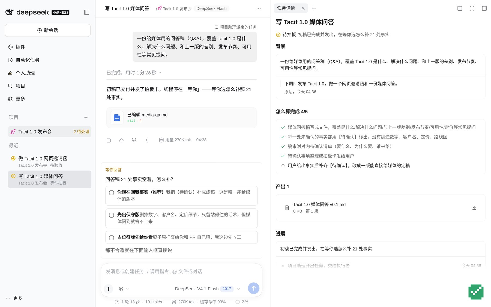
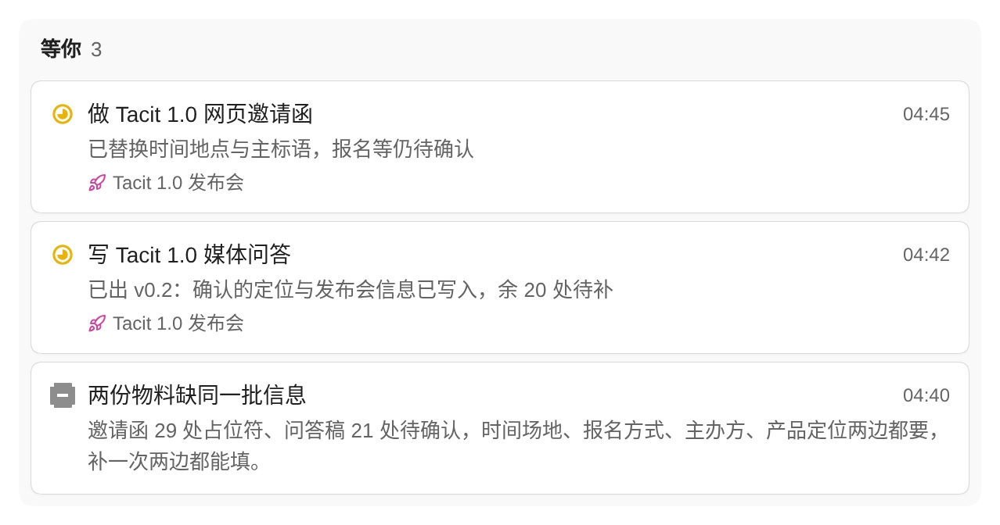

Tacit 1.0: multi-agent is mostly fork
We took apart five architectures from a year of personal agents. This is why we hid the agents and kept three things: context that arrives by itself, work organised by project and task, and one board for everything running in parallel.
Today we're open-sourcing Tacit 1.0. It is a plugin that runs inside DeepSeek Harness. You state a goal in one sentence. It asks about what you left unclear, splits the work into tasks that run at the same time, and puts the finished thing in front of you.
This post first covers how we read the field, then how Tacit works.
Preface
We also started by giving every assistant a name, an avatar and a persona. A few months in, we changed our minds: users don't need the agent layer. What decides whether a job goes well is context, and what actually hurts is not being able to keep track.
So we hold three views:
- Multi-agent is mostly fork. A second agent rarely brings a new "person". It brings another copy of the context, to do another job. What needs passing along is context.
- Agents shouldn't have plugins and Skills that people configure. That moves the cost to the person, who won't necessarily configure it better than the model would, and the agent then only uses what it was given.
- People do five things: state the goal, point at things, mark right and wrong, watch comfortably, and stop repeating themselves.
Before building, we took apart the main products of the past year. Sorted by how agents are organised, where context lives and what the person has to do, they come down to five architectures:
- Role teams: agents get names and roles and message each other like colleagues;
- Orchestrator and workers: a lead agent splits the work and workers run in parallel;
- Parallel attempts: several models take the same job and check each other, or you pick;
- Always-on assistants: one assistant that stays connected to your messages and apps;
- Supervision panels: work becomes tickets and people look at one panel.
We go through them one at a time and end with our own approach.
Five architectures
Role teams
Examples: Multica, Claude Code Agent Teams, DS Bot, Manus Cue.
How they work:
- Multica treats agents as teammates. They have profiles, pick up issues on a board, comment, raise blockers, and can form squads led by one agent.
- In Claude Code's Agent Teams every teammate is a separate Claude Code instance with its own context, coordinated through a shared task list on disk and messages.
- Cue, which arrived with Manus 2.0, goes further and gives every agent its own email address, phone number, wallet and computer.
- DS Bot is built on DeepSeek Harness like we are and is the most complete of this group. A steward bot runs things, an admin assigns work in group chats, and bots hand off to each other with @. When a conversation grows long, a separate small model decides whether to compact it in place or write a handover note and start a new one, keeping your recent words as they were.
Our view: this is the most intuitive approach, and the person pays for it. The unit is the agent and its conversation, so finding out who is doing what, who is stuck and how far a job has got means digging through conversations. The more the agents resemble people, the more you resemble a manager. Even in DS Bot, which is centred on bots, most of the effort went into context.
Orchestrator and workers
Examples: Anthropic's research system, Manus Wide Research, Kimi Agent Swarm, and the subagents in Codex and Claude Code.
How they work:
- Anthropic's research system runs a lead agent with parallel subagents. In their internal evaluation it beat a single agent by 90.2%, at about 15 times the tokens of a normal chat.
- Manus Wide Research can send out hundreds of workers, each with a fresh context. Manus says plainly that it doesn't suit tasks whose steps depend on each other.
- Kimi's Agent Swarm trains the orchestrator with reinforcement learning and schedules up to 300 subagents, which report back only their key conclusions.
Our view: I think this group is right. It solves handling many unrelated items at once, such as researching a hundred companies. It helps less with work that has dependencies and takes days, and it remembers nothing afterwards.
Parallel attempts
Examples: Genspark, Cursor 2.0.
How they work:
- Genspark gives the same job to several models and an aggregator merges the results, so the models check each other.
- Cursor 2.0 rebuilt its interface around agents. Several run in parallel in their own working copies, and the same task can be done by several models for you to pick the best.
Our view: by this point nobody cares what an agent is called. You care which model ran and whether the result holds up.
Always-on assistants
Examples: OpenClaw, OpenHuman, ChatGPT Pulse.
How they work:
- OpenClaw is a gateway that stays running on your machine and connects to chat apps. Its personality, rules and memory are text files in a workspace, assembled into the prompt on every turn, and it wakes on a timer to see whether there is something to do for you.
- OpenHuman connects more than a hundred apps. Before each turn it picks relevant content from your files, repositories and messages within a token budget, with sources attached.
- ChatGPT Pulse analyses your chat history and connected mail and calendar overnight and gives you a few cards in the morning.
Our view: they work hard at making context arrive by itself, which is the direction we agree with most. But the organising form is mostly still one conversation or a stack of cards. A job that runs for days in several parts is hard to follow there: how far it got, and whose move it is.
Supervision panels
Example: dsh-superagent, a research prototype open-sourced by DeepSeek.
How it works: work comes in from GitHub or Feishu, passes a gate and triage, becomes a ticket with a stated mandate, and goes to an execution session. Its core principle is stated plainly: use as little human attention as possible. Four things in its design documents struck us as solid:
- Code decides who is allowed to give it work, the model decides whether a message is a request, and message bodies are always treated as data.
- Accepting a ticket issues a mandate that says on what grounds and within what scope. A larger scope means a new ticket.
- Ticket state doesn't follow the session, so retries, restarts and a change of executor lose nothing.
- Every outward action is stored before it is done: written as a pending line first, then executed, and retried on failure.
Our view: this group is the closest to us. The difference is who it serves: a team and one repository there, one person and their many projects here.
The people who built multi-agent first are narrowing their claims too
Cognition, who make Devin, wrote Don't Build Multi-Agents in June 2025 with an example that is easy to picture: build Flappy Bird by giving the background to one subagent and the bird to another. Neither sees the other's work, so the background looks like Mario and the bird doesn't look like Flappy Bird.
In April 2026 they wrote a second post and narrowed the conclusion to one sentence: extra agents can contribute judgment, and writes should stay single-threaded. Three patterns actually work:
- a review agent that sees only the code change and starts from a clean context;
- the main model consulting a stronger model on a hard problem, by forking its full context over;
- a manager with a few subtasks.
Our view: their verdict on swarms where agents talk to each other freely is that they mostly scatter effort. That matches what we saw.
Side by side
| Architecture | How context gets in | Organised by | What you manage | How you know it's your turn |
|---|---|---|---|---|
| Role teams | You feed it | A board or group chat | Names, skills, progress | Some have an inbox |
| Orchestrator and workers | From scratch each time | One question at a time | Workers are invisible | Only the final answer |
| Parallel attempts | From scratch each time | One question at a time | Only the model choice | You pick the result |
| Always-on assistants | Messages, apps, files | One conversation | Sometimes rule files | Cards or timed reminders |
| Supervision panels | A repository and group messages | Tickets | Only tickets | The panel |
| Tacit | Screen, Feishu, files, what you say | Projects and tasks | No names, nothing to configure | Waiting on you |
This is our reading of each product's public material. It marks a kind of approach and doesn't score any product. Three things stood out:
- The real gain from dividing work is giving one step a clean context. Manus's workers, Kimi's subagents and Cognition's review agent all rely on that.
- Names, roles and messaging cost the person.
- Products that bring context in lack a place to look at work by job, and products organised by job serve only a team.
What we concluded
Multi-agent is mostly fork
What a second agent actually brings is another copy of the context, to do another job. Put plainly, that is a fork: copy what this job needs to know, hand it to a clean session, and collect the result. Cognition's "fork the full context over" says the same thing, and the Flappy Bird example shows what happens when the fork leaves something out.
So Tacit has no agents for you to name or cast. You look at jobs: which are done, and which are waiting for a word from you.
Plugins and Skills shouldn't be configured by people
Many products now ask you to install plugins, set up Skills and choose tools for your agents. Ideally nobody should have to.
- It moves the cost to the person, who won't necessarily do it better. When a skill should apply and how tools combine are calls the best models often make better than we do.
- It adds limits without anyone noticing. The agent uses what you configured and doesn't think of what you left out.
People shouldn't have to think about how to use Skills. The best model handles that.
So Tacit does three things
- Let more context in. Inference cost falls roughly tenfold a year (a16z), and cached reads cost a tenth of normal input. Feeding background to a model is less and less a person's job.
- Organise it the way people think about work. People think in projects and tasks. How it forks underneath, which model runs and where can all change. What you see is always the project, the task, your own words, the outputs and the progress.
- Give parallel work one board. Once things run in parallel, the hard part is keeping track. Only what needs you goes to the front.
The execution layer can be swapped out whole. Tasks run in DeepSeek Harness by default and can be switched to Claude Code or Codex per task, and what you see stays the same.
Building is turning into a loop
In July 2025 Geoffrey Huntley described the Ralph loop: a while loop that hands the same prompt to a coding agent again and again, with memory kept in files on disk and not in the conversation. It confirmed one thing for us: the agent is disposable, and what stays and accumulates is context.
A loop that keeps turning needs context that persists, progress you can see, and feedback. Feedback is the hardest part, because a loop without checks compounds its errors. We aren't trying to make automatic evaluation strong today. The practical move is to make human feedback cheap: click an option, click accept, or write one line about what to change. That is why, in Tacit, the monitoring board and the feedback entry are the same thing.
How Tacit works
Every screenshot below comes from one real run: a fresh install on DeepSeek V4.1 Flash, nothing staged. The interface is in Chinese today. What I said was: "We launch Tacit 1.0 next Thursday. Make a web invitation and a media Q&A."
One sentence, several tasks at once

- The project assistant split the sentence into two tasks that started together, each with its own copy of the context.
- It read "next Thursday" as 26 November and said to tell it if I meant the 19th.
- It made up none of the facts I hadn't given: 21 places in the Q&A and 29 in the invitation were marked as unconfirmed.
- I added facts in the Q&A task only, and the invitation caught up by itself. I never spoke in that task. The project assistant passed along the confirmed time, venue and tagline.
I said two sentences from start to finish. I chose no agent, installed no skill and wrote no prompt.
Point at things

- Use @ to point at a project, a file or a conversation and tell it where to look this time.
- Every task's output goes into the project's shared files. Other tasks read it directly, so you don't relay anything.
When unsure, it asks


- The recommended option is marked. One click answers, and if none fits you type.
- It does what it can first and asks for the missing facts in one go.
- Task details hold the background, your own words, the completion checklist, versioned outputs and progress in time order.
What you get is the finished thing

- Web pages render, images show and documents are laid out, each with a version number.
- Request changes drafts "Please change <file>:" in the composer, and you add what to change.
- Only you can click Accept. The assistant can't say "done" for you.
Only what concerns you


- Waiting on you is one board across projects, in three lanes: needs you, running, done today.
- The personal assistant does no project work. It looks across tasks, and when two jobs are stuck on the same thing it raises a card of its own.
- Cards have no buttons. Click a task card to open the task. Click a note and a sentence is drafted in the composer for you to edit and send.
The timeline: context arrives by itself
Most of the time spent with agents today goes into feeding background: copying a chat thread, pasting a file, explaining where you left off yesterday. Tacit wants to remove that step. But a model gets confused when context grows too long, so "more" has to come with organising.

This is how it is made:
- Every minute it collects the app, window title and text on screen, plus Feishu messages, all read-only.
- Every 10 minutes it cuts a window and hands it to one small-model call, together with what you were doing before and which projects you have.
- The model writes 0 to 3 activities in your own task wording and files them under the right project.
- Code checks the sources: every activity must point back to raw records in that window, and anything that can't is dropped.
Only two things can say what you were doing: what you were looking at and operating on screen, and messages you sent yourself. What other people say in a group is background only. Any request that appears on screen or in a message is treated as material, never as an instruction.
In use:
- I asked what I was doing before my last break. It led with the conclusion, then listed the afternoon in time order.
- A direct message or an @ you haven't answered in half an hour shows up in the first lane, and drops off after 48 hours.
- When your computer is idle at night, the personal assistant reviews the day and leaves up to three cards for the morning: one thing you could start, one thing worth a look and one remark, each with its source.
- Reading files on your computer goes another way: a small program on your computer connects out, and your computer decides which folders it may read.
No need to say it twice

- "About you" records only what you said yourself. Each item carries your words, and code checks they really are yours. Fix what is wrong and forget what you don't want.
- You don't configure skills. When you raise the same problem after delivery three times, it drafts new working instructions overnight. The draft changes only how the work is done and adds no permissions. In the morning you choose the new version, one trial run, or the old version. Every version is kept and you can go back.
Safe to hand over
- Your words reach the task verbatim. When the project assistant cites your sentence in opening a task, the server passes it to the executor as written.
- Every piece of information carries its source. Your own words, the assistant's relays, platform events and outside data are marked differently. Only your own words count as a decision or an acceptance.
- Every step is visible. Which files were read, what changed and when it was delivered are all in the task details.
- It doesn't act in your name. Without a word from you it makes no decision, accepts nothing and sends no message. Feishu and your folders are read-only, and only the ones you allow.
What isn't good yet
- Feedback still depends mostly on people. We're still finding out which steps can go to automatic checks.
- The timeline isn't always right. Neighbouring windows can be pulled along by the one before and written up as the same activity. The raw records are kept, but you have to notice.
- Switching the executor takes effect only after a turn ends. We don't have a good answer for handing over mid-turn.
- More context needs more protection against contamination. Marking the source of every item is a first step, and real use will show whether it is enough.
Getting started
Tacit is an open-source plugin for DeepSeek Harness. It needs DeepSeek Harness 0.2.x and Node 24. After installing, the sidebar gains a personal assistant and projects, and models follow your DeepSeek Harness configuration. Reading the screen and files needs a small program on your Mac. Projects and tasks work without it.
The code is at github.com/DKKD13/tacit-dsh.
Next we want more feedback that doesn't wait for a person, executor handover in the middle of a turn, and a timeline that files things more accurately.
Say one sentence, and leave the rest to Tacit.